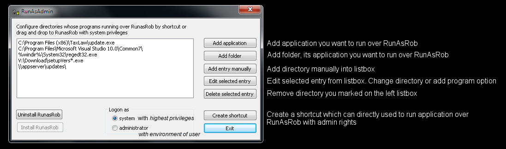
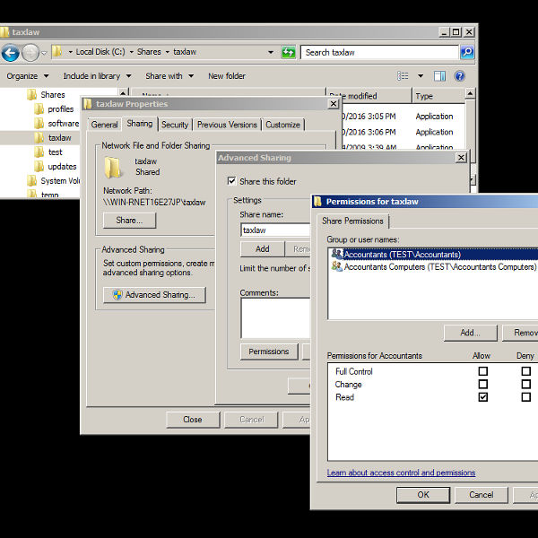
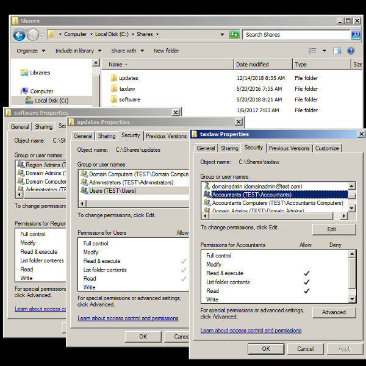
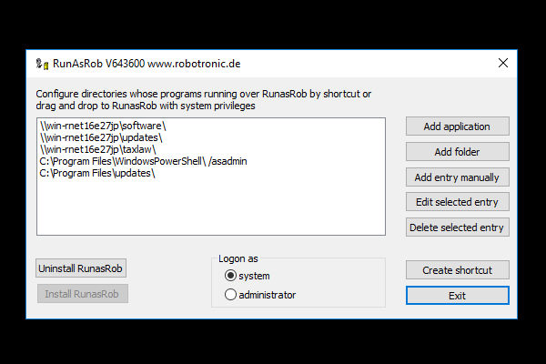
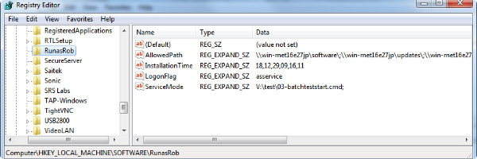
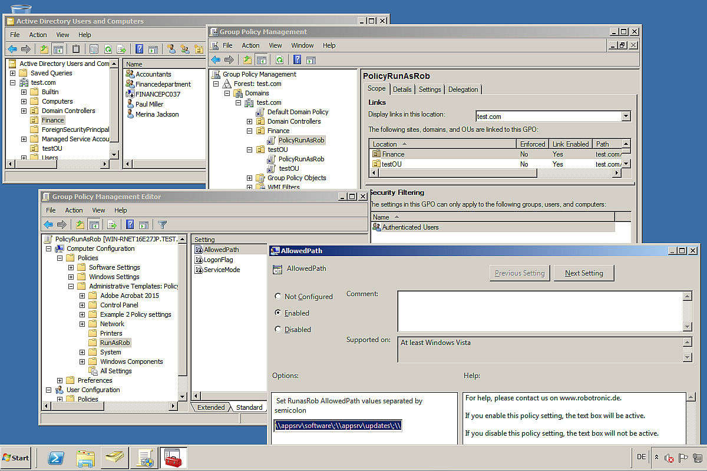
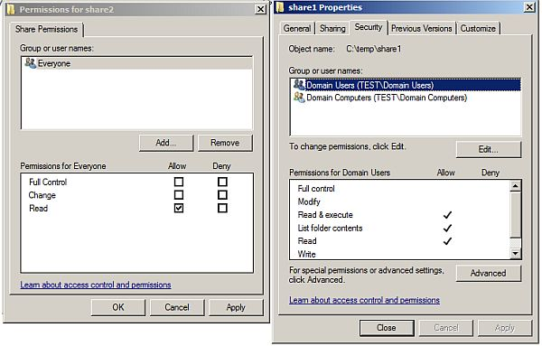
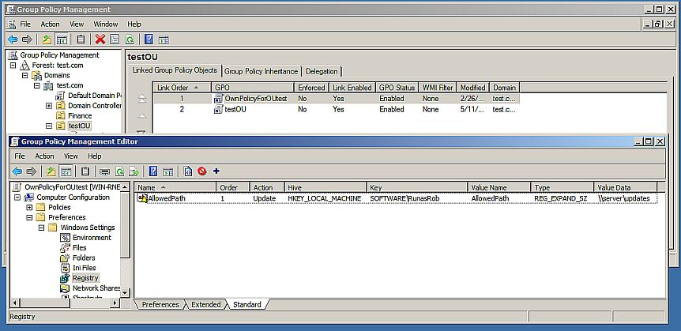
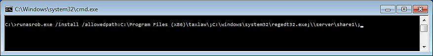
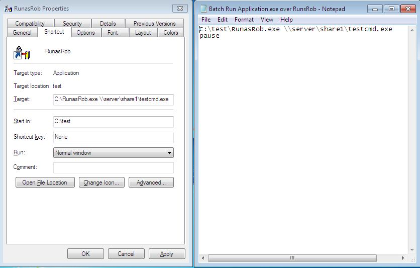

RunAsRob run as admin
RunAsRob run as admin
Run as administrator or run with system account from standard user
Run application as admin or system user from a limited user account.
Configure software and folders, their contents are allowed to start with administrator or system privileges by a standard user.
-
Distribute software or updates, by simply copying the setup file into a directory with read permissions for a user group
who can install this provided software themselves, if the directory is authorized in RunAsAdmin. -
Delegate administrative tasks to limited users or any other specific user group,
by authorizing the task in RunAsAdmin, combined with folder permission for this specific user group. - Allow standard users to run applications, which need administrator rights.
If you understand the simple method of RunAsAdmin,
it is easy to use this tool effective for various purposes
on a single workstation up to a big domain forest.
RunAsAdmin.exe is a grafical interface to install the service of RunAsRob and set the allowed directories into the registry path of RunAsRob.
If a limited user start an application by a shortcut, created from RunAsAdmin, or the user drag an drop the application over RunasRob.exe,
the service of RunAsRob compare its registry setting, if this is an allowed application.
If it is allowed, the service of RunAsRob start it with system account or as administrator, according the logon option you set in the RunAsAdmin interface.
Default read only permissions on microsoft systems, avoid that a limited user manipulate registry settings or files in the default program location.
In collaboration with directory permissions, OUs or Group Policies, RunAsAdmin can be a versatile tool in a big domain.

Quick guide run as administrator with RunAsAdmin
Launch an application as administrator with system rights from a standard user account.
- Unpack Runasrob.zip, start RunAsAdmin.exe and press button >> install RunasRob << to install the service of RunAsRob.
- Add application you want to start with system rights by button >> Add application <<.
- Select this application on listbox in RunAsAdmin and create a shortcut by >> Create shortcut <<.
- Use this shortcut for limited user to run the selected program with system rights.
- If you need, you can restrict the access for a group of users by settings folder permissions of this directory.
- By using a network share, the computer account of this machine must have read rights to this share. In Domain it is the group domain computers.
- Video example
Run application as administrator from standard user with environment of this limited account.
- Start RunasAdmin.exe from RunasRob folder.
- Press button >> Install RunasRob<< to install RunasRob Service.
- Set the option >> Logon as << to administrator.
- Press button >> Add application << and select the program you want to authorize.
- Select this application in the listbox and press button >> Create shortcut <<.
- By created shortcut, a limited user can now use this shortcut to call selected application as administrator.
-
Before the application starts, the user will be asked for his credentials
to run it under his own account and profile as a member of the local administrator group. - Video example
By read rights on share and folder permissions you can authorize specific users or computers in a domain,
which can use the allowed directory in RunAsAdmin for RunAsRob.exe.
In screenshot below, i share three central folders software, updates, taxlaw on a network server
and i set appropriate read rights for the specific group >Region admins<, >Users<, and >Accountants<,
and all computer clients in domain by group >Domain Computers<.
On share taxlaw i resctrict the allowed call to computer group > Accountants Computers<.
Finally i authorize on clients this network directories in RunAsAdmin.
Now users of the specific group can run applications from their appropriate folder via RunAsRob with system or administrator account.
Please note following network rules for the understanding
- the local system account is the Active Directory computer object in the domain with the name of the machine.
- that a network share permission of a folder and a permission from a folder are completely separate from each other. You should always configure both access permissions on your shared folder.
Network share permissions on Server, in this screenshot as example of the folder taxlaw

Folder permissions on Server of the shared folders sofware, updates and taxlaw

Finally, authorize network share on client computer in RunAsAdmin

Stored Settings in registry.
Here you see the registry values of RunAsRob with AllowedPath and LogonFlag, which will be set by RunAsAdmin and checked from RunAsRob, if an application should start via RunAsRob.
You can also edit them by policy or manually.

With group policy you can manage central the allowed applications.
You can download this RunAsRob Group Policy admx und adml files on RunAsRobPolicy.zip
On Screenshot you see an OU Finance, i assign the PolicyRunAsRob and add the allowed directories >> \\appsrv\software\;\\appsrv\updates\;\\appsrv\taxlaw\ << to computers of this OU.
To differentiate which users or groups of this computers may run applications from this directory i use the folder permissions i described above.

Example in a domain
Configure a folder path for a standard user to run applications with local administrator rights from this directory.
By this way you can share a folder in a domain for applications, scripts, updates, patches...
for limited users, which can install software themselves as they become available in this folder.
When required, the domain administrator must only copy the according application file to this folder and inform the user.
You can also specified a local program path, its applications you want to allow to start under administrator rights from a standard user account.
Description:
-
Use a local path or share a folder on a server in a domain with read permissions for user and on a network share also for the machine account.
You can can also create a group of computers and/or users which are authorized to this folder.
By this way you can set flexible rights for users, computers or groups which may run applications over RunasRob with administrator rights

-
Install and configure RunasRob on client and set the authorized folders or applications in registry
by a) RunasAdmin.exe, b) central group policy or c) command line.
a) RunasAdmin
b) Central group policy

c) Command line
install RunasRob with option/install and /allowedpath, followed by the folder or application you want to allow.
If you want to allow more folders and applications separate it with a semicolon..
On example below you allow applications in local path taxlaw, the program regedt32.exe and applications in server path share1.
>> runasrob.exe /install /allowedpath:C:\Program Files (x86)\taxlaw\;C:\windows\system32\regedt32.exe;\\server\share1\; <<

An advanced optional switch are /asservice (by default) or /asadmin.
/asservice -> The allowed application is running under system account with elevated admin rights.
/asadmin -> After the user enter his credentials he will be a member of the local administrator group for this application which is running under his own account.
>> runasrob.exe /install /allowedpath:C:\Program Files (x86)\taxlaw\;C:\windows\system32\regedt32.exe;\\server\share1\;/asadmin <<

-
Configuration is finished. Now you can see on registry path of RunasRob the Key allowedPath.
You can edit this key with Runasadmin, manually or central policies.
On 64 Bit machine >> HKEY_LOCAL_MACHINE\SOFTWARE\Wow6432Node\RunasRob
On 32 Bit machine >> HKEY_LOCAL_MACHINE\SOFTWARE\RunasRob
-
Now a user can call applications from this folders with local administrator rights
by drag and drop the allowed application over RunasRob.exe
or you make a shortcut or batch file like the following commands..
>> runasrob.exe \\server\share1\yourProgram.exe <<
>> runasrob.exe c:\windows\system32\regedt32.exe <<
>> runasrob.exe c:\Program Files (x86)\taxlaw\update.exe <<

Further Video examples:
In video example 1, i authorize limited users to run applications over RunAsRob from system32 directory with system rights.
In video example 2, i authorize limited users to install applications over RunAsRob from a network share.
In video example 3 i will show you how to configure very specific restrictions by an easy way in an enterprise domain.
I authorize a group of limited users to run applications over RunAsRob with administrator rights from a specified network share on computers in a specific department.
Contact:
For any suggestions, errors, questions, specific requirements or adjustments please contact:
runas@robotronic.de
Licence:
RunasRob is only free for private use.
For companies and other organisations we deliver a licensed version, registered to the organisation name.
Order RunasRob >>>
Download RunasRob >>>
Date: 2019-10-13
Data protection
Imprint